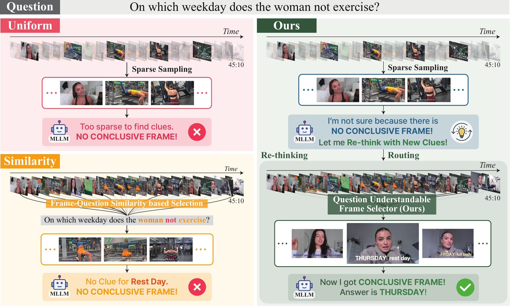
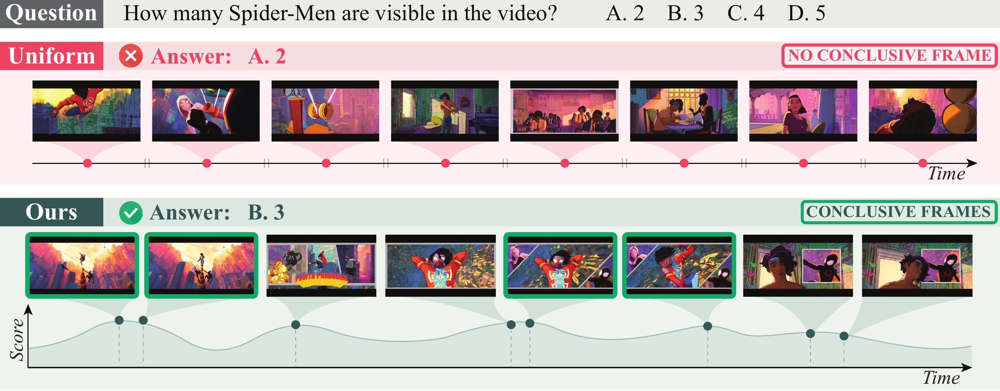
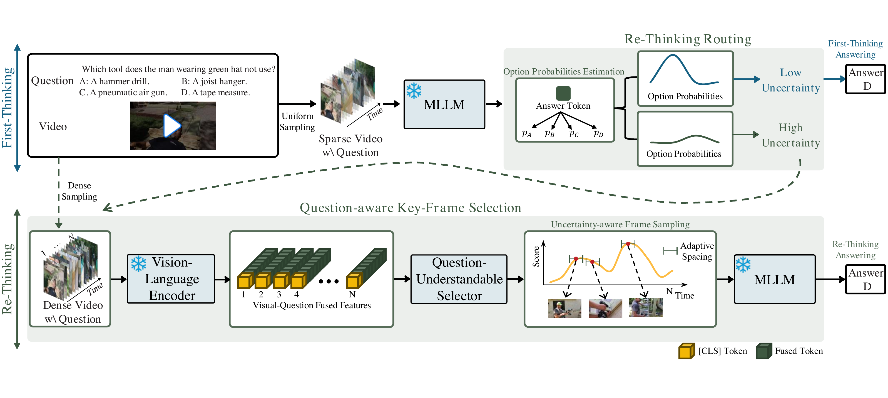
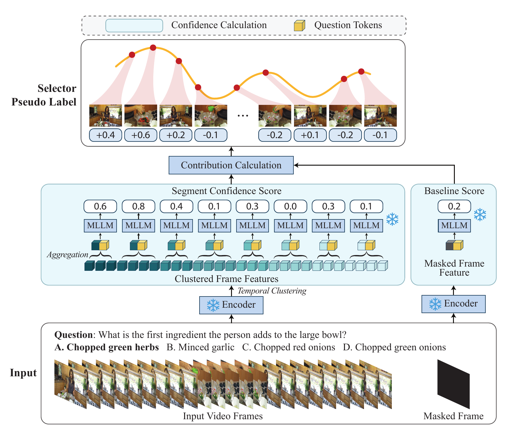
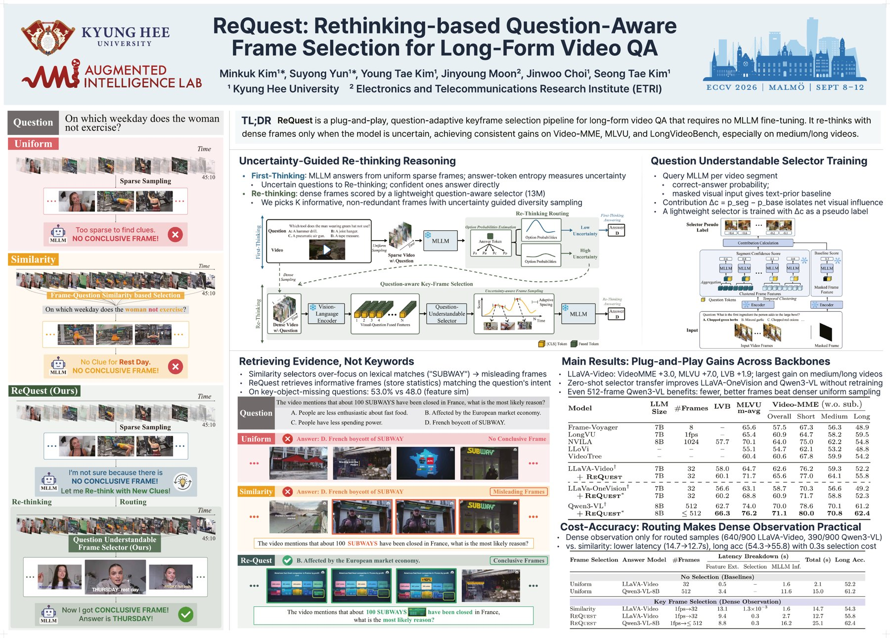

Overview
How can an MLLM find the few decisive frames hidden inside a long video? It cannot simply watch everything — and committing to one set of frames up front means committing to whatever that set happens to miss.
ReQuest treats frame selection as part of the reasoning, not a preprocessing step. The model runs a simple loop:
- Answer. Reason over uniformly sampled frames and produce a first answer.
- Doubt. Estimate uncertainty from the model's own answer tokens. Confident cases answer directly.
- Look again. For uncertain cases, a lightweight question-aware selector localizes informative frames across the video, and the model reasons once more — this time knowing what to look for.
This selective rethink-and-retrieve process improves long-form video QA across multiple benchmarks and MLLM backbones, without modifying or fine-tuning the underlying answer model.

See it in action
Same video, same question — only the evidence changes. Pick a selection strategy to see which frames it hands the MLLM, and what answer comes back.
Notice what the Similarity tab does: it over-focuses on lexical matches, so a question about "SUBWAY" closures pulls up Subway storefronts. ReQuest retrieves evidence for the question, not keywords — on questions whose key object is missing from the wording, it reaches 53.0 versus 48.0 for feature-similarity selection.

Method
ReQuest first performs First Thinking over uniformly sampled frames; answer-token entropy measures how confident the prediction is. Confident questions are answered directly. Uncertain ones enter a Re-thinking stage, where dense frames are scored by a lightweight question-understandable selector (13M parameters) and K informative, non-redundant frames are picked with uncertainty-guided diversity sampling before the MLLM reasons again.
The selector is trained from the MLLM's own responses: each video segment's contribution to the correct answer is isolated against a masked-input baseline, and this contribution score supervises the selector as a pseudo label — no human frame annotations, and no gradients ever touch the MLLM.


Results
Plugged into LLaVA-Video, ReQuest improves Video-MME by +3.0, MLVU by +7.0, and LongVideoBench by +2.1, with the largest gains on medium and long videos. The same selector transfers zero-shot to LLaVA-OneVision and Qwen3-VL without any retraining — and even a 512-frame Qwen3-VL benefits, where fewer, better frames beat denser uniform sampling.
Benchmark comparison
| Model | LLM Size |
#Frames | LVB | MLVU m-avg |
Video-MME (w/o sub.) | |||
|---|---|---|---|---|---|---|---|---|
| Overall | Short | Medium | Long | |||||
| Video-LLaVA | 7B | 8 | 39.1 | 47.3 | 39.9 | 45.3 | 38.0 | 36.2 |
| VideoChat2 | 7B | 16 | – | 44.5 | 39.5 | 48.3 | 37.0 | 33.2 |
| ShareGPT4Video | 8B | 16 | – | 46.4 | 39.9 | 48.3 | 36.3 | 35.0 |
| Chat-UniVi-V1.5 | 7B | 64 | – | – | 40.6 | 45.7 | 40.3 | 35.8 |
| VideoLLaMA2 | 7B | 16 | – | – | 47.9 | 56.0 | 45.4 | 42.1 |
| TimeSuite | 7B | 128 | – | – | 46.3 | – | – | 41.9 |
| Frame-Voyager | 7B | 8 | – | 65.6 | 57.5 | 67.3 | 56.3 | 48.9 |
| LongVU | 7B | 1fps | – | 65.4 | 60.9 | 64.7 | 58.2 | 59.5 |
| NVILA | 8B | 1024 | 57.7 | 70.1 | 64.0 | 75.0 | 62.2 | 54.8 |
| LLoVi | – | – | – | 55.1 | 54.7 | 62.1 | 53.2 | 48.8 |
| VideoTree | – | – | – | 60.4 | 60.6 | 67.8 | 59.9 | 54.2 |
| LLaVA-Video† | 7B | 32 | 58.0 | 64.7 | 62.6 | 76.2 | 59.3 | 52.2 |
| + ReQuest | 7B | 32 | 60.1+2.1 | 71.7+7.0 | 65.6+3.0 | 77.0+0.8 | 64.1+4.8 | 55.8+3.6 |
| LLaVA-OneVision† | 7B | 32 | 56.6 | 63.1 | 58.7 | 70.3 | 56.6 | 49.2 |
| + ReQuest* | 7B | 32 | 60.2+3.6 | 68.8+5.7 | 60.9+2.2 | 71.7+1.4 | 58.8+2.2 | 52.3+3.1 |
| Qwen3-VL† | 8B | 512 | 62.7 | 74.0 | 70.0 | 78.6 | 70.1 | 61.2 |
| + ReQuest* | 8B | ≤512 | 66.3+3.6 | 76.2+2.2 | 71.1+1.1 | 80.0+1.4 | 70.8+0.7 | 62.4+1.2 |
Click a column header to sort. † reproduced from the official implementation in our environment. * zero-shot transfer using a selector trained with LLaVA-Video-generated supervision. +x.x = gain over the backbone.
End-to-end cost on long videos
Because rethinking is routed by uncertainty, dense observation only runs when it is needed: ReQuest ends up faster than always-on similarity-based selection while improving long-video accuracy, with a selection overhead of about 0.3 seconds.
| Frame Selection | Answer Model | #Frames | Latency Breakdown (s) | Total (s) | Long Acc. | ||
|---|---|---|---|---|---|---|---|
| Feature Ext. | Selection | MLLM Inf. | |||||
| No Selection (Baselines) | |||||||
| Uniform | LLaVA-Video | 32 | 0.5 | – | 1.6 | 2.1 | 52.2 |
| Uniform | Qwen3-VL-8B | 512 | 3.4 | – | 11.6 | 15.0 | 61.2 |
| Key Frame Selection (Dense Observation) | |||||||
| Similarity | LLaVA-Video | 1fps→32 | 13.1 | 1.3×10⁻³ | 1.6 | 14.7 | 54.3 |
| ReQuest | LLaVA-Video | 1fps→32 | 9.4 | 0.3 | 2.7 | 12.7 | 55.8 |
| ReQuest | Qwen3-VL-8B | 1fps→≤512 | 8.8 | 0.3 | 16.2 | 25.1 | 62.4 |
Average latency measured on 900 Video-MME long-video questions; latency excludes video decoding overhead. With Re-thinking Routing, dense observation is performed only for samples routed to the re-thinking stage.
Poster

BibTeX
@inproceedings{kim2026request,
title = {{ReQuest}: Rethinking-Based Question-Aware Frame
Selection for Long-Form Video {QA}},
author = {Kim, Minkuk and Yun, Suyong and Kim, Young Tae and
Moon, Jinyoung and Choi, Jinwoo and Kim, Seong Tae},
booktitle = {Computer Vision -- ECCV 2026},
series = {Lecture Notes in Computer Science},
volume = {17052},
pages = {386--404},
publisher = {Springer},
address = {Cham},
year = {2026},
doi = {10.1007/978-3-032-37235-2_23}
}